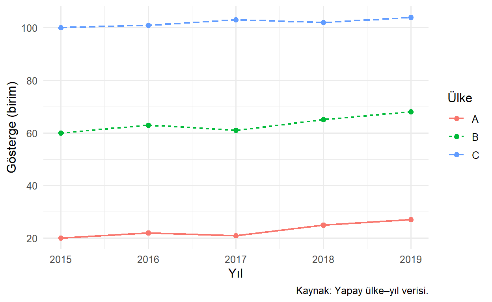
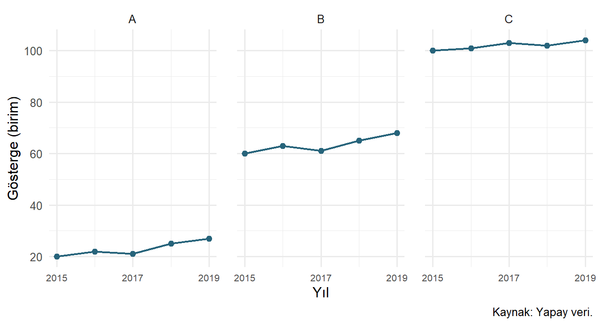
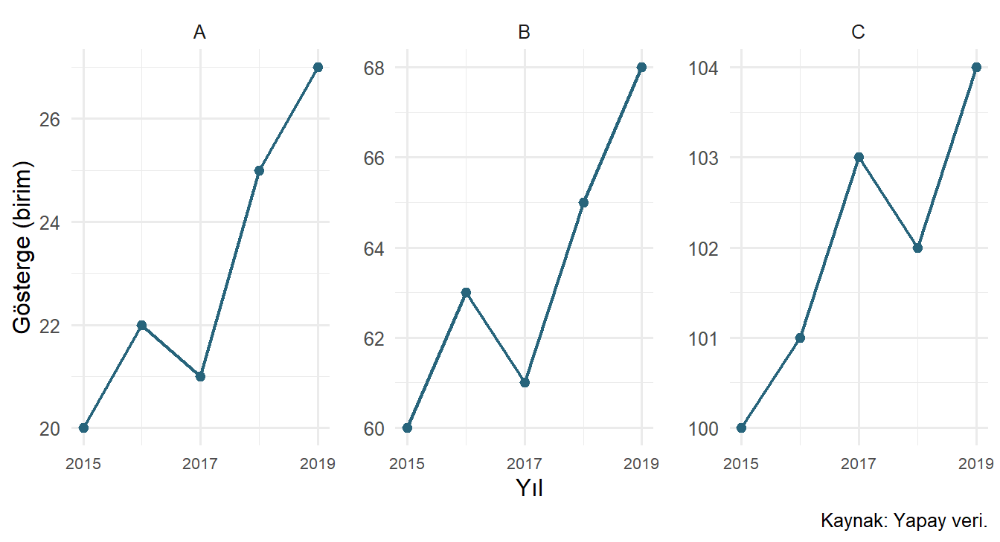
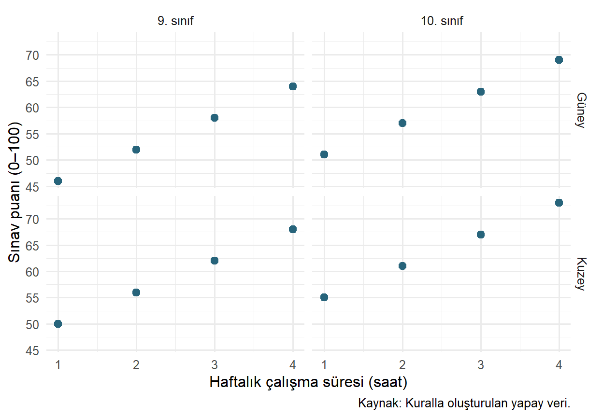
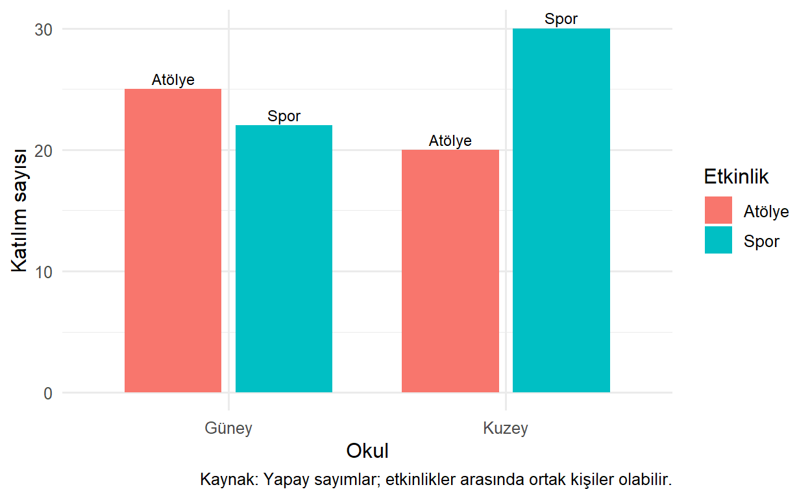
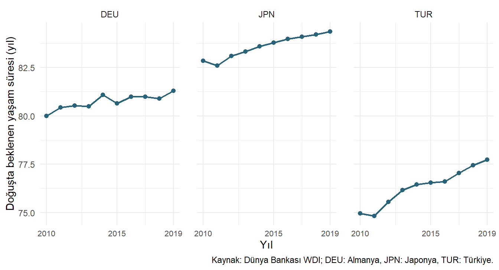

library(ggplot2)
seri <- data.frame(
ulke = rep(c("A", "B", "C"), each = 5),
yil = rep(2015:2019, times = 3),
deger = c(20, 22, 21, 25, 27, 60, 63, 61, 65, 68,
100, 101, 103, 102, 104)
)24 Gruplandırma ve Facet Yapıları
Tek bir genel örüntü, alt gruplardaki farklılıkları örtebilir. Öte yandan her grubu aynı grafiğe eklemek de renk ve çizgi kalabalığı yaratabilir. Bu bölümde grupları aynı panelde ayırmak ile ayrı panellerde karşılaştırmak arasında nasıl karar vereceğimizi ele alacağız.
Facet, veriyi bir veya birkaç değişkenin değerlerine göre alt panellere ayırmaktır. Küçük çoklu grafikler yaklaşımında aynı görsel yapı tekrarlanır; okuyucu her seferinde yeni bir grafik dilini çözmeden grupları karşılaştırabilir (Wilke 2019, böl. 21). Bunun işe yaraması için ölçeklerin ve analiz biriminin anlamı korunmalıdır.
24.1 Öğrenme Hedefleri ve Ön Koşullar
Bu bölümün sonunda group_by() ile aes(group = ...) ayrımını açıklayabilecek; çoklu çizgilerde doğru bağlantıları kurabilecek; facet_wrap() ve facet_grid() kullanabilecek; ortak ve serbest eksenleri araştırma sorusuna göre seçebileceksiniz. Önceki bölümlerdeki geometri, eşleme ve özetleme bilgileri kullanılacaktır.
24.2 Veri Gruplaması ile Grafik Gruplaması
dplyr::group_by() tablo üzerinde sonraki özetleme işlemlerinin hangi gruplar için yapılacağını tanımlar. aes(group = ...) ise çizim katmanında hangi gözlemlerin birlikte ele alınacağını belirler. Biri diğerinin yerine geçmez.
Örneğin aynı ülkenin yıllarını bir çizgi olarak bağlamak isteriz. Bu, ülke başına ortalama hesaplamakla farklı bir işlemdir. Bir çizgi katmanında grubu yanlış seçmek, farklı ülkelerin değerlerini tek bir zaman dizisiymiş gibi birleştirebilir.
24.3 Aynı Panelde Birden Fazla Zaman Dizisi
Sorumuz: Üç ülke örneğinin yıllık gösterge değişimi birbirinden nasıl farklılaşıyor? Önce kontrollü ve küçük bir yapay panelle başlayalım. Her satır bir ülke–yıl gözlemidir; değerlerin gerçek ülkelere karşılığı yoktur.
Burada ülke bir kategoridir. colour ve linetype eşlemeleri çizgileri ayırt eder; group hangi satırların bağlanacağını açıkça belirtir.
p_seri <- ggplot(seri, aes(x = yil, y = deger, group = ulke,
colour = ulke, linetype = ulke)) +
geom_line(linewidth = 0.8) +
geom_point(size = 2) +
scale_x_continuous(breaks = 2015:2019) +
labs(x = "Yıl", y = "Gösterge (birim)", colour = "Ülke", linetype = "Ülke",
caption = "Kaynak: Yapay ülke–yıl verisi.") +
theme_minimal(base_size = 12)
p_seri
Bu örnekte ayrık colour = ulke eşlemesi grupları zaten ayırır; açık group = ulke kodun amacını görünür kılar. Renk eşlemesini kaldırsak bile gruplar korunur. group = 1 yazsaydık bütün satırları tek grup sayar, ülkeler arasındaki anlamsız bağlantılara yol açardık (ggplot2, t.y.).
Çizgiler, ülkeler arasındaki düzey farklarını aynı panelde karşılaştırmayı kolaylaştırır. Üçten çok daha fazla çizgi olduğunda örtüşme ve lejant takibi zorlaşabilir. Bu durumda facet iyi bir alternatif olabilir.
24.4 facet_wrap(): Panelleri Satırlara Yaymak
Bir değişkenin kategorileri için ayrı panel istediğimizde facet_wrap() uygun bir başlangıçtır. Önce bütün panellerde aynı eksenleri kullanalım.
p_panel <- ggplot(seri, aes(x = yil, y = deger, group = ulke)) +
geom_line(linewidth = 0.8, colour = "#27647B") +
geom_point(size = 2, colour = "#27647B") +
scale_x_continuous(breaks = c(2015, 2017, 2019)) +
labs(x = "Yıl", y = "Gösterge (birim)", caption = "Kaynak: Yapay veri.") +
theme_minimal(base_size = 12) +
theme(panel.spacing.x = grid::unit(1.2, "lines"),
axis.text.x = element_text(size = 8))
p_sabit <- p_panel + facet_wrap(vars(ulke), ncol = 3, scales = "fixed")
p_sabit
vars(ulke) panel değişkenini belirtir; önceki örneklerde gördüğümüz ~ ulke formülü de kullanılabilir. ncol = 3 üç sütun ister. Panel başlıkları ülkeyi zaten belirttiği için ayrıca renk lejantına ihtiyaç duymadık.
| Argüman | Karar |
|---|---|
facets |
Hangi değişkenlerin panelleri oluşturacağı |
ncol, nrow |
Panellerin yerleşimi |
scales |
Eksenlerin ortak veya serbest olması |
labeller |
Panel başlıklarının nasıl yazılacağı |
drop |
Kullanılmayan faktör düzeylerinin düşürülmesi |
Örneğin labeller = label_both, yalnızca kategori değerini değil değişken adını da gösterebilir. drop = FALSE, veri gözlemi olmayan ancak faktör düzeylerinde tanımlı kategorileri korumak istediğimizde yararlıdır. Bu seçenek eksik veriyi üretmez.
24.5 Serbest Ölçek: Farklı Bir Soruya Cevap
Sorumuz değişirse: Her ülkenin kendi içindeki küçük hareketlerini daha ayrıntılı incelemek istiyorsak ne yapabiliriz?
p_serbest <- p_panel + facet_wrap(vars(ulke), ncol = 3, scales = "free_y")
p_serbest
"fixed" iki ekseni ortak tutar. "free_y" yalnızca dikey, "free_x" yalnızca yatay, "free" her iki ekseni serbest bırakır. Şekil 24.3 her panelin ayrıntısını büyütür; artık iki panelde aynı dikey uzaklık aynı sayısal fark anlamına gelmez.
A’nın başlangıç–bitiş farkı 7, B’nin 8, C’nin 4 birimdir. Buna rağmen serbest eksende C’nin hareketi büyük görünebilir. Hangi ülkenin değişimi daha büyük sorusunu paneldeki çizginin açısına veya kapladığı yüksekliğe bakarak yanıtlamamalıyız.
DikkatÖlçek seçimini açıklayın
Serbest ölçek kullanmak tek başına yanlış değildir. Yanlış olan, bu grafiği ortak ölçekteymiş gibi yorumlamaktır. Düzey ve mutlak fark karşılaştırmalarında ortak ölçek; her serinin kendi hareketlerini incelemede açıkça belirtilen serbest ölçek tercih edilebilir.
24.6 facet_grid(): İki Değişkeni Çaprazlamak
İki kategorik boyutun kesişimleri anlamlıysa satır–sütun düzeni yararlıdır. Örneğin iki okulda, iki sınıf düzeyinin çalışma süresi–puan ilişkisini karşılaştıralım. Yine küçük yapay veri kullanıyoruz.
siniflar <- expand.grid(
okul = c("Kuzey", "Güney"),
sinif = c("9. sınıf", "10. sınıf"),
saat = 1:4,
KEEP.OUT.ATTRS = FALSE, stringsAsFactors = FALSE
)
siniflar$puan <- 40 + 6 * siniflar$saat +
ifelse(siniflar$okul == "Kuzey", 4, 0) +
ifelse(siniflar$sinif == "10. sınıf", 5, 0)
siniflar$sinif <- factor(siniflar$sinif, levels = c("9. sınıf", "10. sınıf"))expand.grid() belirtilen değerlerin bütün birleşimlerini oluşturur. factor() ile sınıf düzeylerini doğal sırasına koyduk; alfabetik sıralamaya bırakmadık. Puanlar açık bir kuralla türetildiği için örnek tamamen yapaydır; aynı doğrusal düzenin gerçek sınıflarda bulunacağını varsaymayız.
p_grid <- ggplot(siniflar, aes(x = saat, y = puan)) +
geom_point(size = 2.5, colour = "#27647B") +
facet_grid(rows = vars(okul), cols = vars(sinif)) +
labs(x = "Haftalık çalışma süresi (saat)", y = "Sınav puanı (0–100)",
caption = "Kaynak: Kuralla oluşturulan yapay veri.") +
theme_minimal(base_size = 12)
p_grid
rows satır değişkenlerini, cols sütun değişkenlerini alır. facet_grid(okul ~ sinif) eşdeğer klasik yazımdır. Grid yapısında aynı sütundaki paneller yatay, aynı satırdakiler dikey ölçeği paylaşır; serbest ölçek isteği bu hizalama sınırları içinde uygulanır. Her panel için bütünüyle bağımsız eksen gerekirse facet_wrap() daha uygun olabilir.
24.7 Sütunlarda Gruplar: Yığmak mı, Yan Yana Koymak mı?
Gruplar sadece çizgilerde değil sütunlarda da önemlidir. Bir okulun iki etkinliğe katılım sayıları olsun. Her sayı ayrı sayımdır; öğrencilerin iki etkinliğe birden katılıp katılmadığı bilinmiyor.
katilim <- data.frame(
okul = rep(c("Kuzey", "Güney"), each = 2),
etkinlik = rep(c("Atölye", "Spor"), times = 2),
sayi = c(20, 30, 25, 22)
)
p_dodge <- ggplot(katilim, aes(x = okul, y = sayi, fill = etkinlik)) +
geom_col(position = position_dodge(width = 0.8), width = 0.7) +
geom_text(aes(label = etkinlik), position = position_dodge(width = 0.8),
vjust = -0.4, size = 3.2, show.legend = FALSE) +
labs(x = "Okul", y = "Katılım sayısı", fill = "Etkinlik",
caption = "Kaynak: Yapay sayımlar; etkinlikler arasında ortak kişiler olabilir.") +
theme_minimal(base_size = 12)
p_dodge
position_dodge() aynı x konumundaki grupları yan yana kaydırır. geom_col() içindeki width sütunun, konum nesnesindeki width ise yan yana yerleşimin genişliğini düzenler. geom_text() etiketleri aynı kaydırmayla sütunların üstüne yerleştirir; vjust düşey hizalamadır. Böylece etkinliği tanımak yalnızca renge bağlı değildir. Etkinlikler ayrık ve toplamı anlamlı bir bütün oluştursaydı yığılmış gösterim de değerlendirilebilirdi. Burada iki sayıyı toplamak benzersiz öğrenci sayısını vermeyebilir.
position = "fill", her x konumundaki toplamı 1’e getirerek bileşen oranlarını gösterir. Ancak bunun anlamlı olması için bileşenlerin aynı bütünü uygun biçimde bölmesi gerekir. Katılım sayılarından “okuldaki öğrencilerin yüzde kaçı?” sonucunu, okulun öğrenci paydasını bilmeden çıkaramayız.
24.8 Gerçek Panel Verisinde Facet
Şimdi aynı yaklaşımı WDI verisine uygulayalım. Sorumuz: Almanya, Türkiye ve Japonya’nın 2010–2019 yaşam beklentisi serileri nasıl görünür? Ülke kodlarını kullanmak ad yazımındaki farklılıklardan kaçınmamızı sağlar (World Bank 2026).
panel <- readr::read_csv("data/country_indicators.csv", show_col_types = FALSE)
yasam <- panel |>
dplyr::filter(country_code %in% c("DEU", "TUR", "JPN"),
year >= 2010, year <= 2019) |>
dplyr::select(country_code, year, life_expectancy_total)
# Eksik yıl satırı varsa ekle; değeri tahmin etmeden NA bırak.
yasam <- tidyr::complete(
yasam, country_code = c("DEU", "TUR", "JPN"), year = 2010:2019
)
yasam |>
dplyr::group_by(country_code) |>
dplyr::summarise(yil_sayisi = dplyr::n(),
eksik = sum(is.na(life_expectancy_total)), .groups = "drop")complete() burada her ülke için on yılın tabloda bulunmasını sağlar. Eksik kombinasyonları açık satırlara dönüştürür; yaşam beklentisini doldurmaz. Böylece bir eksik yılın çizgide sessizce atlanması önlenir. Yukarıdaki kontrol tablosu her ülkenin kapsamını gösterir.
p_wdi <- ggplot(yasam, aes(x = year, y = life_expectancy_total)) +
geom_line(linewidth = 0.8, colour = "#27647B") +
geom_point(size = 1.7, colour = "#27647B", na.rm = TRUE) +
facet_wrap(vars(country_code), ncol = 3) +
scale_x_continuous(breaks = c(2010, 2015, 2019)) +
labs(x = "Yıl", y = "Doğuşta beklenen yaşam süresi (yıl)",
caption = "Kaynak: Dünya Bankası WDI; DEU: Almanya, JPN: Japonya, TUR: Türkiye.") +
theme_minimal(base_size = 11) +
theme(panel.spacing.x = grid::unit(1.2, "lines"),
axis.text.x = element_text(size = 8))
p_wdi
Üç panelin ortak dikey ölçeği düzey karşılaştırmasını korur. Seçilmiş üç ülke bütün dünyayı temsil etmez. Çizgi eğiminden bir politika etkisi çıkarılamaz; yaşama koşulları, veri üretim süreçleri ve başka etkenler ayrıca değerlendirilmelidir. Bu bir dönem betimlemesidir, nedensel açıklama değildir.
24.9 Sık Yapılan Hatalar
group_by()yapılmış bir tablonun çizgi bağlantılarını kendiliğinden doğru kuracağını varsaymak.- Sayısal kodu kategori olarak düşünürken sürekli renk ölçeğine bırakmak; gerekiyorsa açıkça
factor()kullanın. - Çok sayıda grubu tek panelde ayırt edilemeyen renklere yüklemek.
- Serbest eksenli panellerde çizgi açılarını mutlak değişim gibi karşılaştırmak.
- Panel değişkeni bulunmayan bir katmanın bütün panellerde tekrarlanabileceğini gözden kaçırmak; ortak referans çizgilerinde bu bilinçli olabilir.
- Yığılmış sütunları, bileşenler aynı ve ayrık bütünü oluşturmadan kullanmak.
24.10 Egzersizler
- Kolay:
group_by(ulke)ileaes(group = ulke)hangi iki farklı sorunu çözer? - Kolay:
p_panelnesnesini iki sütunlu facet düzenine dönüştürün. - Orta: Yapay seride her ülkenin ilk ve son değer farkını hesaplayın. Serbest eksenli grafiğin yüksekliğinden bu farkı okuyabilir misiniz?
- Orta: Okul–sınıf örneğinde satır ve sütun facet değişkenlerinin yerini değiştirin. Veriler değişir mi?
- Zor: WDI grafiğini
scales = "free_y"ile yeniden oluşturun. Hangi soru daha kolay, hangisi daha zor cevaplanır? - Zor: Aynı öğrenciler hem spor hem atölyeye katılabiliyorsa katılım sütunlarını yığıp “toplam öğrenci” diye adlandırmak neden yanlıştır?
24.11 Egzersiz Çözümleri
Çözüm 1: İlki tabloyu sonraki veri hesaplamaları için gruplar; ikincisi grafik katmanında hangi gözlemlerin birlikte işleneceğini belirler. Biri veri özeti, diğeri görsel bağlantı ve katman hesabı bağlamındadır.
Çözüm 2:
iki_sutun <- p_panel + facet_wrap(vars(ulke), ncol = 2)Çözüm 3:
degisim <- seri |>
dplyr::arrange(ulke, yil) |>
dplyr::group_by(ulke) |>
dplyr::summarise(fark = dplyr::last(deger) - dplyr::first(deger),
.groups = "drop")
degisimA 7, B 8, C 4 birim artar. Serbest eksenler farklı çarpanlarla gösterildiği için aynı görsel yükseklik aynı sayısal farkı temsil etmez.
Çözüm 4:
ters_grid <- ggplot(siniflar, aes(saat, puan)) +
geom_point() +
facet_grid(rows = vars(sinif), cols = vars(okul))Veri ve ölçümler değişmez; yerleşim değişir. Hangi boyutun öncelikli karşılaştırma olduğu, uygun düzeni seçmede yardımcıdır.
Çözüm 5: p_wdi + facet_wrap(vars(country_code), scales = "free_y") ülke içindeki küçük dalgalanmaları görünür kılar. Ülkelerin düzeylerini ve mutlak değişimlerini panel yüksekliğinden karşılaştırmak zorlaşır; eksenler tek tek okunmalıdır.
Çözüm 6: Aynı kişi iki bileşende sayılabilir. Toplam katılım, benzersiz öğrenci sayısından büyük olabilir. Birbirini dışlayan bileşen veya açıkça tanımlanmış katılım ölçümü gerekir.
24.12 Bölüm Özeti
Gruplama, hangi gözlemlerin birlikte çizildiğini; facet ise hangi gözlemlerin aynı panelde bulunduğunu belirler. Ortak ölçek karşılaştırılabilirliği, serbest ölçek yerel ayrıntıyı destekler. Bu seçimler yalnızca düzenleme değildir; sorunun hangi yönünün görünür olacağını değiştirir.
Bir sonraki bölümde ölçeklerin kendisini, erişilebilir renk seçimini ve okuyucuyu yönlendiren etiketleri daha ayrıntılı inceleyeceğiz.
24.13 Kaynaklar ve Ek Okuma
Küçük çoklu grafiklerin tasarımı için (Wilke 2019), grafik grameri için (Wickham 2016) incelenebilir. İşlev seçenekleri (ggplot2, t.y.) içindeki gruplama, facet_wrap(), facet_grid() ve position_dodge() belgelerinde açıklanır.